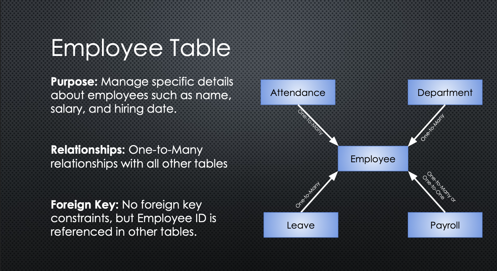
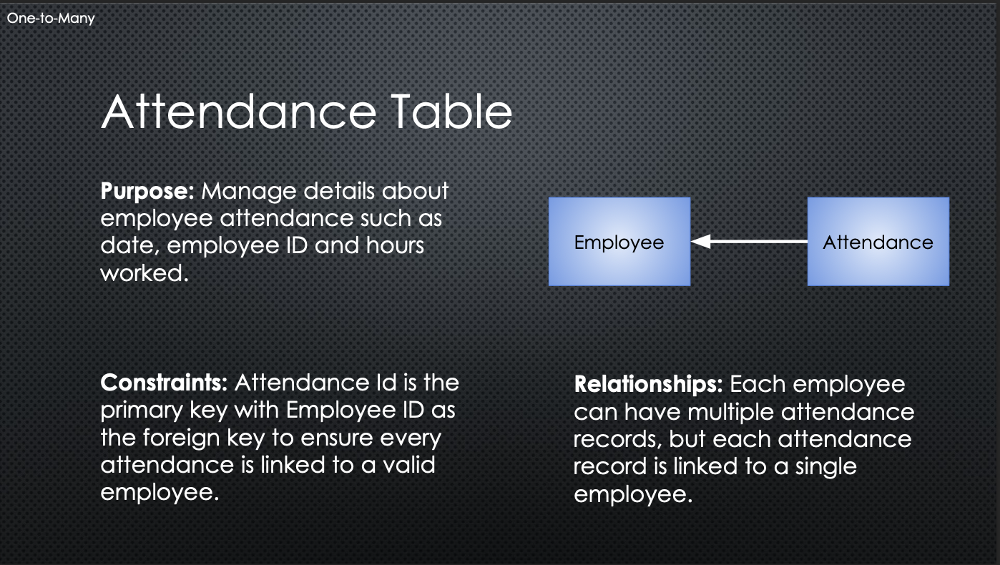
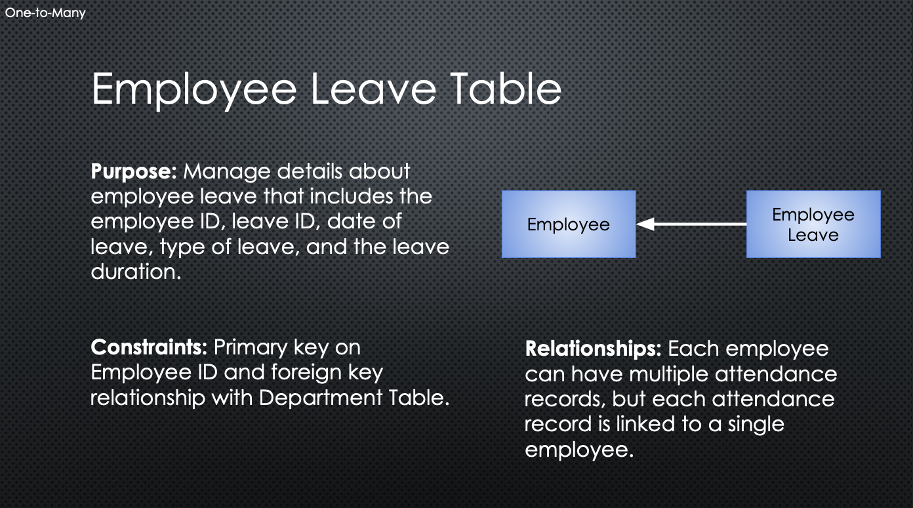
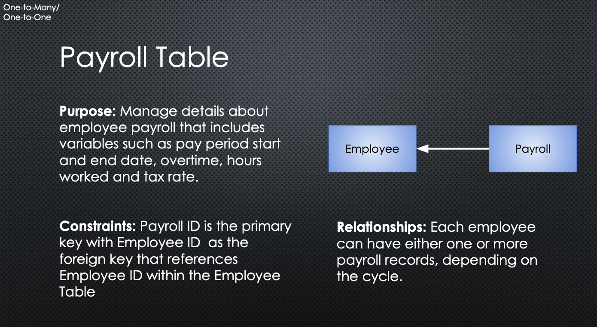
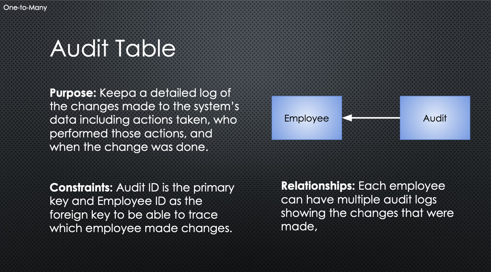
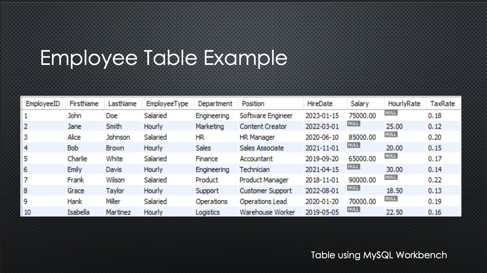
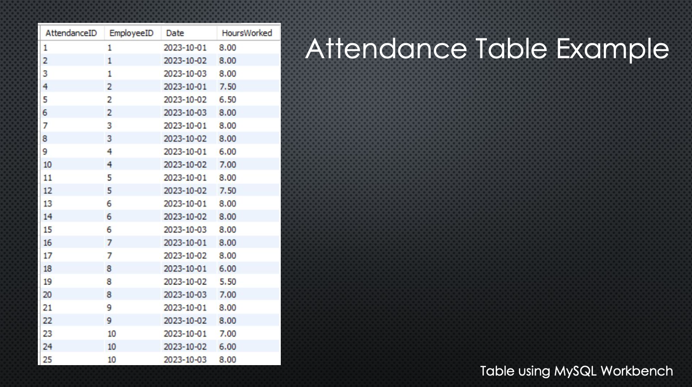
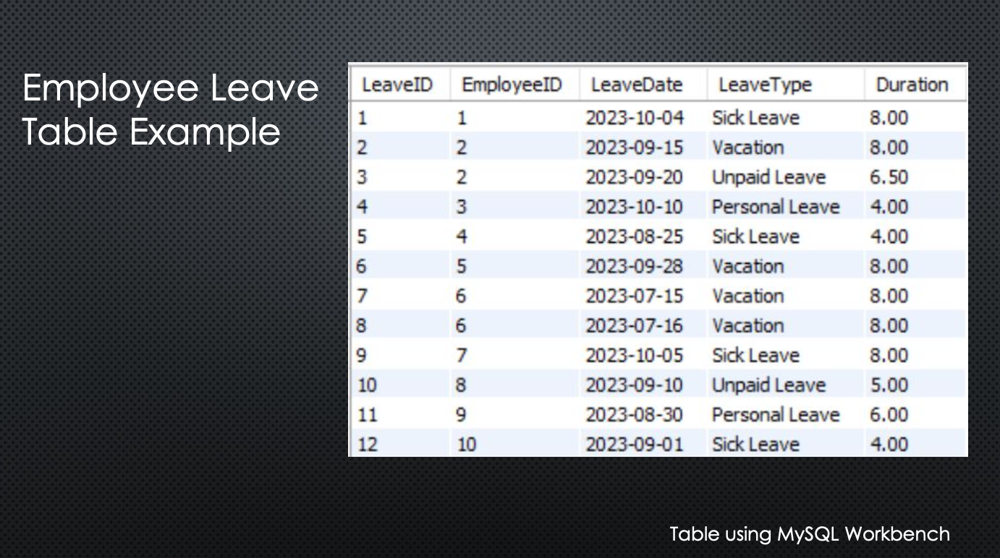
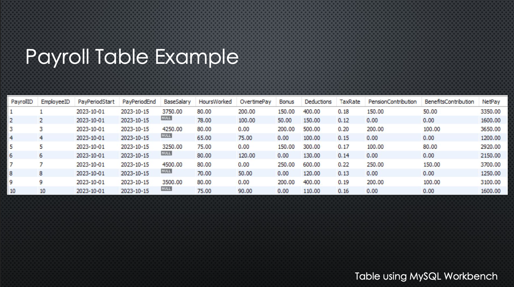
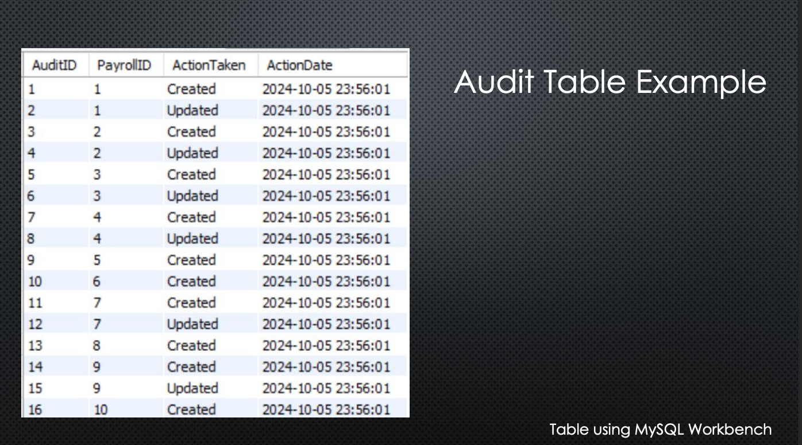

Streamline your payroll management with PayTrack. Our comprehensive solution automates key payroll tasks, ensuring accuracy, compliance, and efficiency.
PayTrack aims to address common issues associated with manual payroll management, including inaccuracies, time delays, compliance issues, and more.
PayTrack offers a comprehensive set of features designed to simplify payroll management:
The database structure for PayTrack includes the following SQL schema and corresponding table images for better visualization:
-- Create Database
CREATE DATABASE PayTrack;
USE PayTrack;
-- Employee Table
CREATE TABLE Employee (
EmployeeID INT PRIMARY KEY AUTO_INCREMENT,
FirstName VARCHAR(50),
LastName VARCHAR(50),
EmployeeType VARCHAR(10),
Department VARCHAR(50),
Position VARCHAR(50),
HireDate DATE,
Salary DECIMAL(10, 2),
HourlyRate DECIMAL(10, 2),
TaxRate DECIMAL(5, 2)
);

-- Attendance Table
CREATE TABLE Attendance (
AttendanceID INT PRIMARY KEY AUTO_INCREMENT,
EmployeeID INT,
Date DATE,
HoursWorked DECIMAL(5, 2),
FOREIGN KEY (EmployeeID) REFERENCES Employee(EmployeeID)
);

-- Leave Table
CREATE TABLE EmployeeLeave (
LeaveID INT PRIMARY KEY AUTO_INCREMENT,
EmployeeID INT,
LeaveDate DATE,
LeaveType VARCHAR(50),
Duration DECIMAL(5, 2),
FOREIGN KEY (EmployeeID) REFERENCES Employee(EmployeeID)
);

-- Payroll Table
CREATE TABLE Payroll (
PayrollID INT PRIMARY KEY AUTO_INCREMENT,
EmployeeID INT,
PayPeriodStart DATE,
PayPeriodEnd DATE,
BaseSalary DECIMAL(10, 2),
HoursWorked DECIMAL(5, 2),
OvertimePay DECIMAL(10, 2),
Bonus DECIMAL(10, 2),
Deductions DECIMAL(10, 2),
TaxRate DECIMAL(5, 2),
PensionContribution DECIMAL(10, 2),
BenefitsContribution DECIMAL(10, 2),
NetPay DECIMAL(10, 2),
FOREIGN KEY (EmployeeID) REFERENCES Employee(EmployeeID)
);

-- Payroll Audit Table
CREATE TABLE PayrollAudit (
AuditID INT PRIMARY KEY AUTO_INCREMENT,
PayrollID INT,
ActionTaken VARCHAR(50), -- 'Created', 'Updated', 'Deleted'
ActionDate TIMESTAMP DEFAULT CURRENT_TIMESTAMP,
FOREIGN KEY (PayrollID) REFERENCES Payroll(PayrollID)
);

PayTrack offers Employee Management, Payroll Calculation, Leave & Attendance Tracking, Tax & Benefits Management, Audit & Compliance, Reports & Analytics, and User Portals for Admin, Employee, and Audit.
Experience the features of PayTrack firsthand! Here are some examples after executing SQL code.
    For more information or to request a further demo, please contact us!
Noah, Austin & Matthew